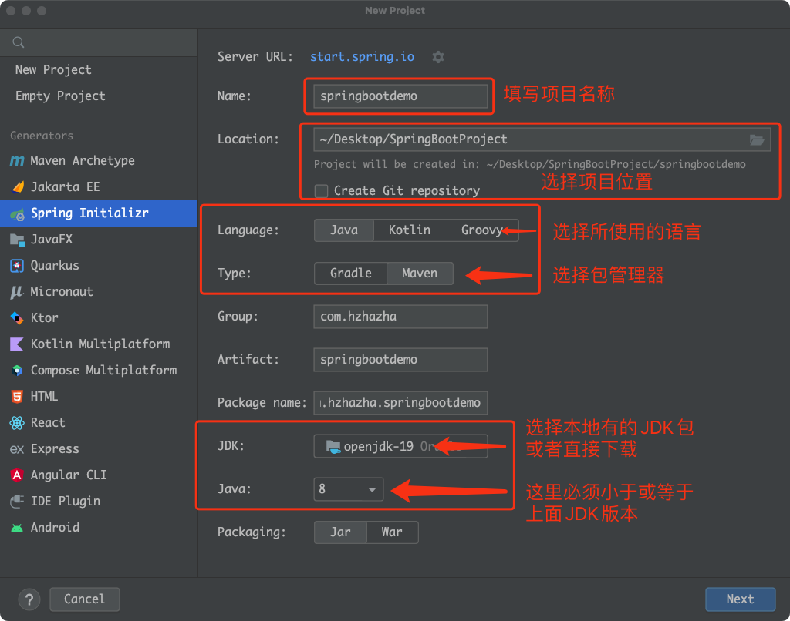
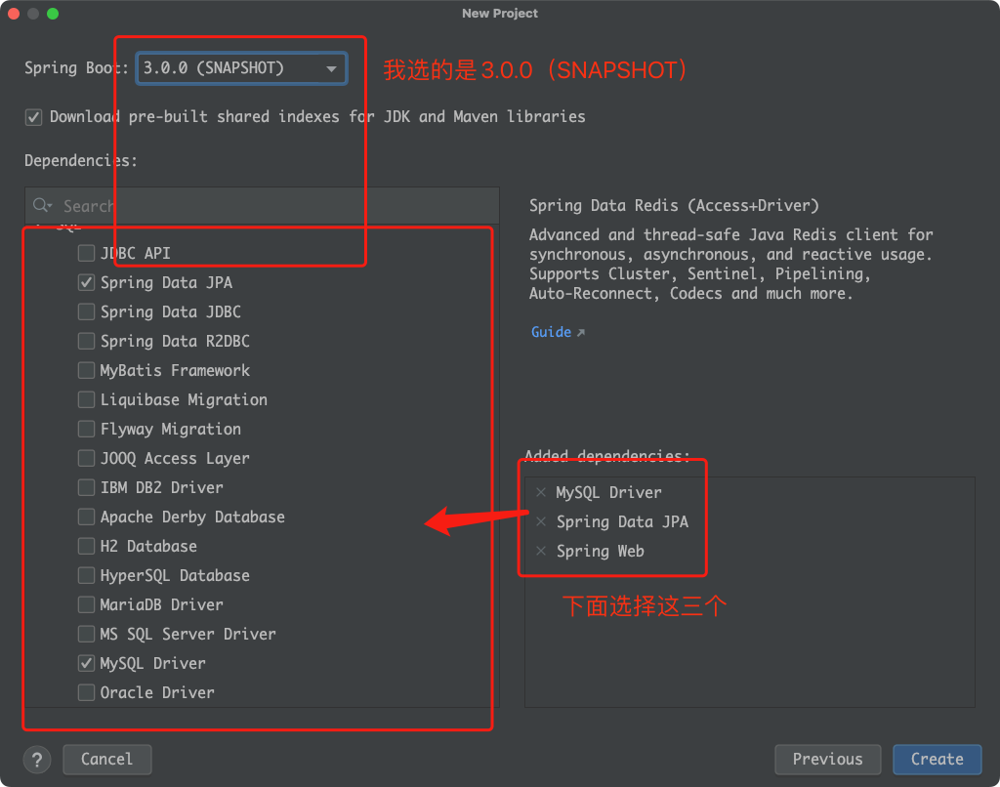
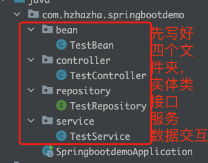

整合内容：springboot + spring-data-jpa + mysql
目的：即拿即用，只需要maven一下就可以使用，里面包含调用数据库样例，各个层级的代码样式以及注释。
目的：即拿即用，只需要maven一下就可以使用，里面包含调用数据库样例，各个层级的代码样式以及注释。
创建项目
已经在项目里面依次点击 File - New - Project
刚下载IDEA的同学点击 New Project
以上选择都选好后点击 Next，接下来选择好 springboot 版本



然后点击 Create 创建项目，接下来等待一会就创建好了
修改配置文件
配置文件有两个 pom.xml 和 application.properties
pom.xml：是maven包配置文件
application.properties：是项目配置文件
我们打开项目配置文件添加上基础的配置信息
# 项目端口配置
server.port=8088
# 数据库驱动
spring.datasource.driver-class-name=com.mysql.cj.jdbc.Driver
# url
spring.datasource.url=jdbc:mysql://localhost:3306/springbootdemo
# 用户名
spring.datasource.username=root
# 密码
spring.datasource.password=12345678
# 显示查询sql
spring.jpa.show-sql=true
# 添加hibernate.dialect
spring.jpa.database-platform=org.hibernate.dialect.MySQL5Dialect
# jpa工作模式
# create：每次运行程序时，都会重新创建表，故而数据会丢失
# create-drop：每次运行程序时会先创建表结构，然后程序结束时清空表
# update：每次运行程序，没有表时会创建表，如果对象发生改变会更新表结构，原有数据不会清空，只会更新（推荐使用）
# validate：运行程序会校验数据于数据库的字段类型是否相同，字段不同会报错
# none：禁用DDL处理
spring.jpa.hibernate.ddl-auto=update然后添加一些简单的代码
- Bean 里面写与数据库对应的实体类
- Controller 里面写和前端交互的API接口
- Repository 里面写对数据库单表的查询操作，例如通过某个字段查询数据，分页查询等
- Service 里面写所有的业务逻辑，将前端给的数据通过一系列操作转换成结果
Bean 实体类
@Entity(name = "test")
public class TestBean {
@Id //设置主键
@GeneratedValue(strategy = GenerationType.IDENTITY) //mysql的主键自增模式
private Long id; // 主键 自增
@Column // 字段标识
private String name; // 姓名
@Column
private Integer age; // 年龄
@Column
private String idCard; // 身份证
//后续的getter、setter用IDEA自动生成（必要）
//重载函数，如equals、toString等可以用IDEA自动生成（可选）
}Controller 接口层
@RestController//接口层注释
@RequestMapping(value = "/test")
public class TestController {
private TestService testService;
public TestController(TestService testService){
this.testService = testService;
}
@GetMapping(value = "/hello") //GET接口注解
public String hello(@RequestParam(value = "name", defaultValue = "World") String name){
return String.format("Hello %s", name);
}
@PostMapping(value = "/insertorupdate")
public String insertOrUpdate(@RequestBody TestBean testBean){
testService.insertOrUpdate(testBean);
return String.format(testBean.toString());
}
@PostMapping(value = "/delete")
public String delete(@RequestBody TestBean testBean){
testService.delete(testBean);
return String.format(testBean.toString());
}
@PostMapping(value = "/findbyid")
public TestBean findByIdIs(@RequestParam Integer id){
return testService.findByIdIs(id.longValue());
}
@PostMapping(value = "/findbyage")
public List<TestBean> findByAge(@RequestParam Integer age){
return testService.findByAge(age);
}
@PostMapping(value = "/findbyname")
public List<TestBean> findByName(@RequestParam String name){
return testService.findByName(name);
}
}致谢
这就是一个最简单的框架了，接下来会整合各种有用的插件，并写出样例代码来加强理解，代码在我写完之后我会放到Github上，大家感兴趣的记得点个Star，谢谢了